Montréal · Transfer Day · Mont-Tremblant · 7 days · 2 properties
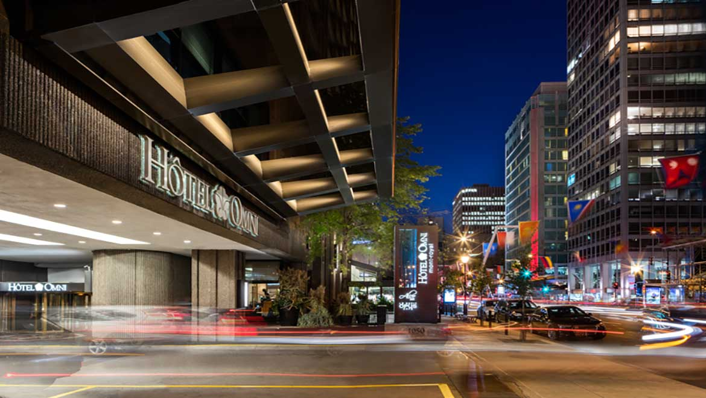
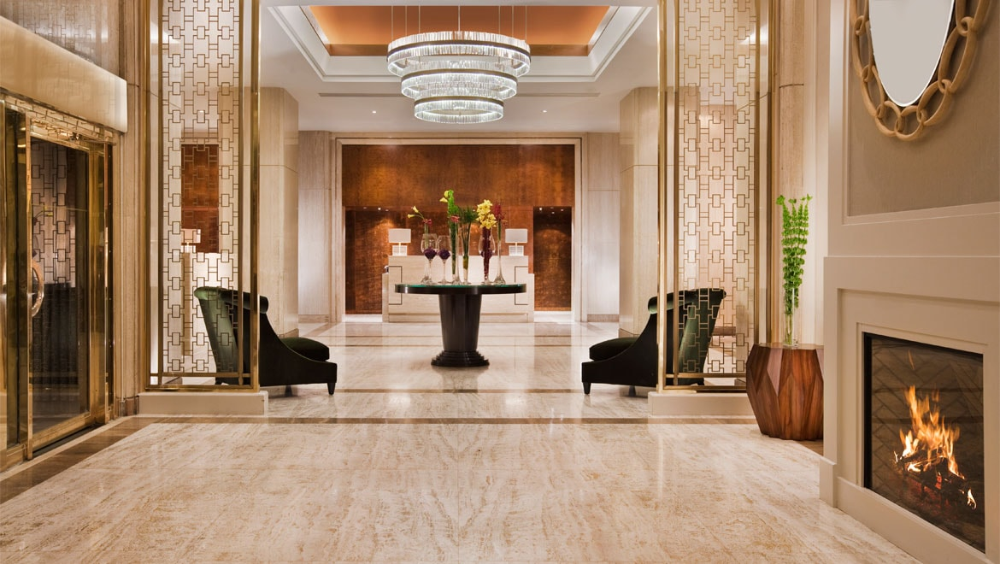
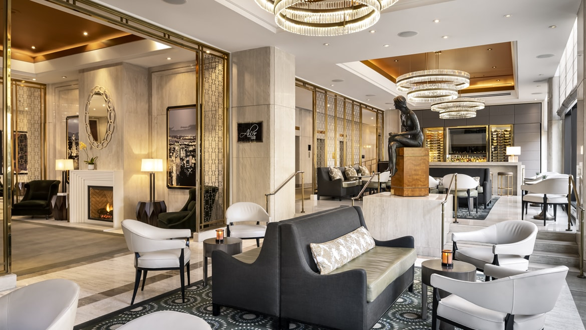
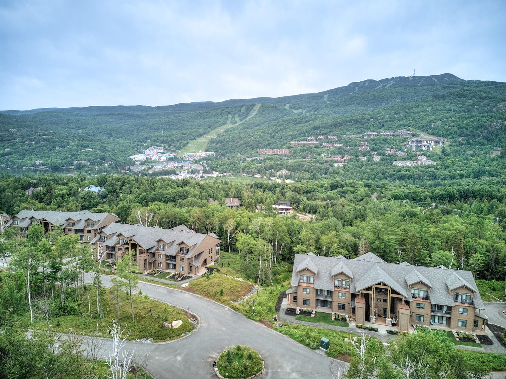
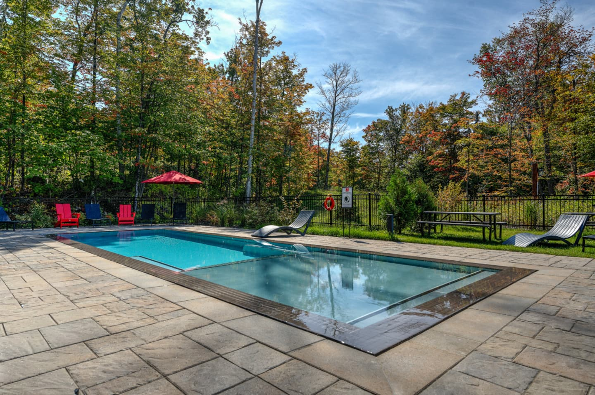
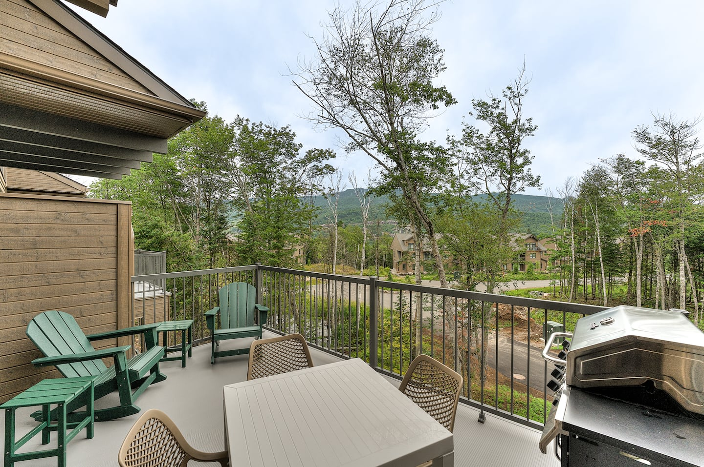
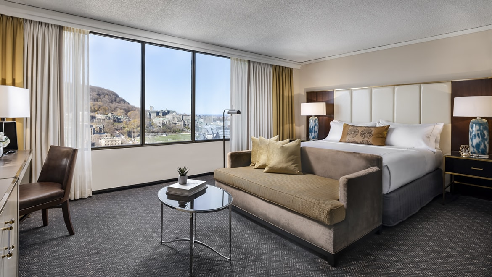
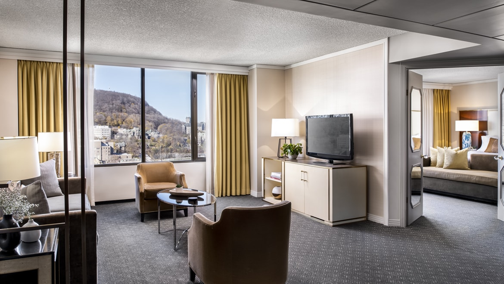
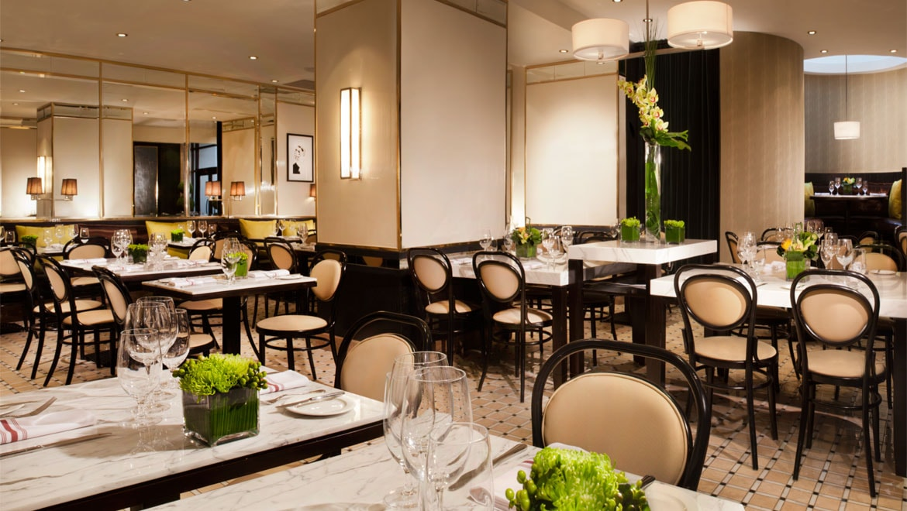
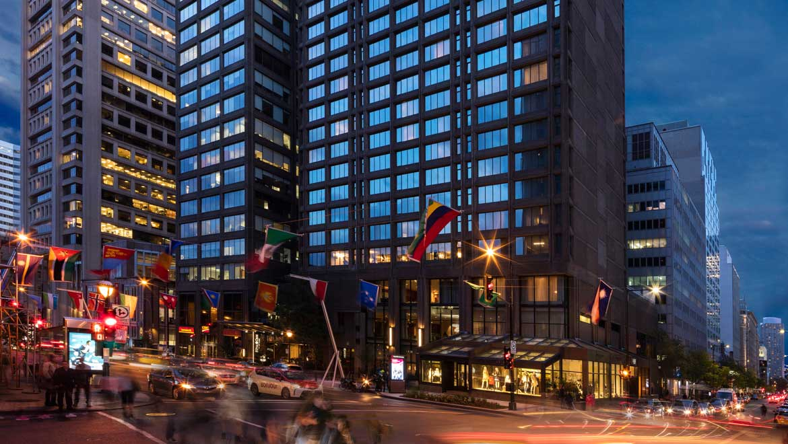
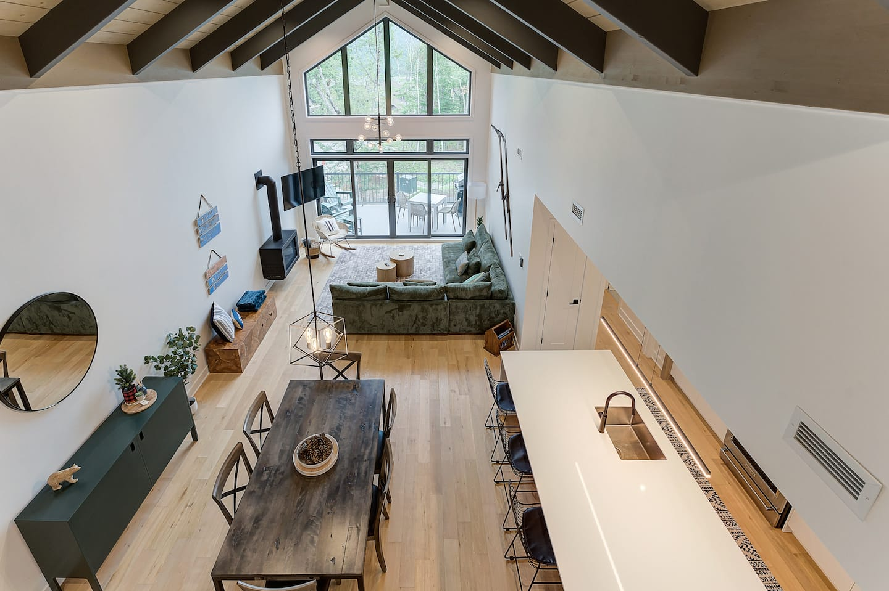
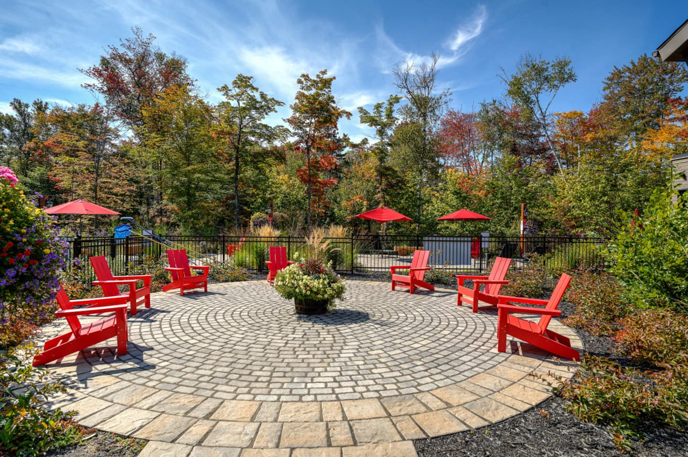
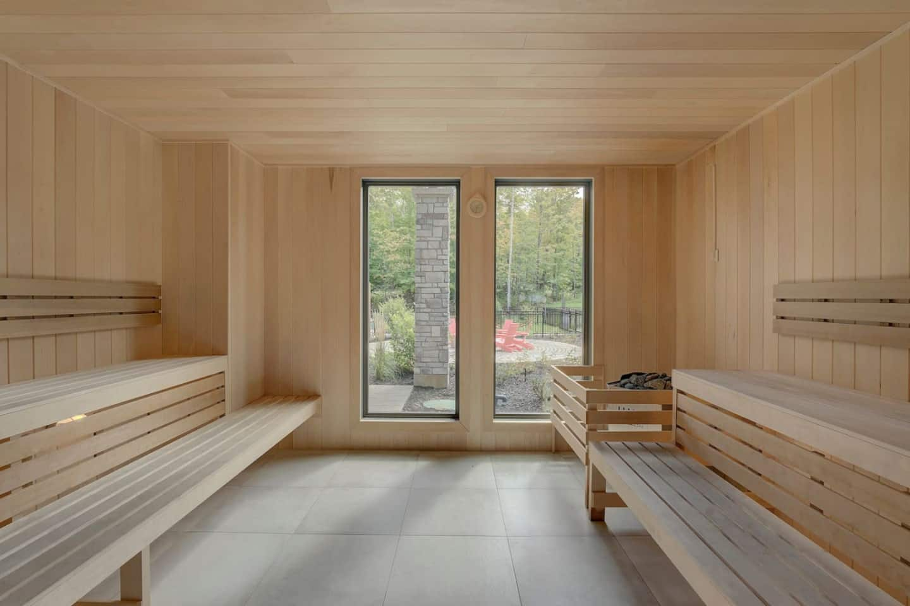
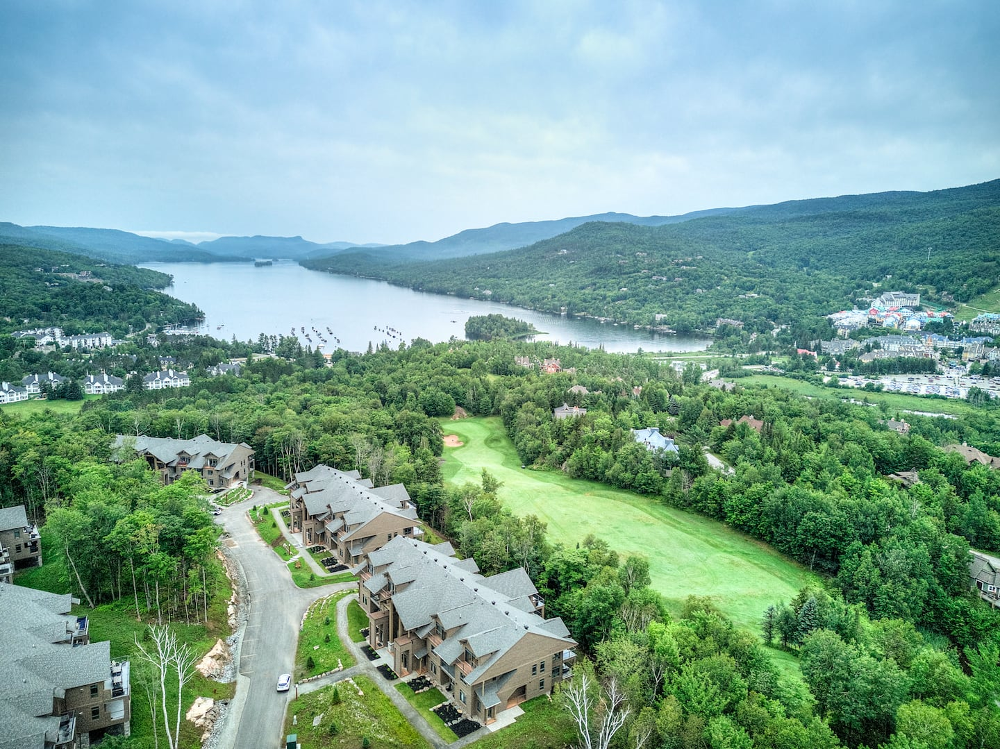
Le Petit Opus Café: Mon–Fri 6:30–11 AM. Last breakfast at the hotel. Enjoy it — don't rush the checkout. Collect everyone, get luggage to the car.
Checkout deadline noon. Car loaded. Head north on Autoroute 40 W → Autoroute 15 N.
Senior gem of the transfer day. Fully accessible treetop boardwalk (<6% grade), "squirrel hunt" scavenger trail for kids, 40m observation tower with Laurentian panorama. ~1.5 hours on-site. Recommended by Gemini research, verified as an excellent senior-accessible stop. ~30 min off the direct route via exit toward Val-des-Lacs.
Charming Laurentian village on Autoroute 15. Shops, restaurants, easy 20-minute stop. Not a real detour — it's on the route.
~12–15 min from the condo. Stock the Verbier kitchen: 4 days of breakfasts, snacks, BBQ dinner supplies, wine/beer, coffee capsules (Keurig + filter machine on-site). Get GF options for Danielle. This is the cheapest eating strategy for 4 days at the condo.
Smart lock self check-in. Orient the group: 3 bedrooms, spa pavilion location (pool + hot tub + sauna: 6 AM–10 PM), free shuttle stop at the building. BBQ balcony with mountain views. Light evening — unpack, cook, decompress.
Canada-level fine dining. Jonathan's splurge group dinner. Seven-course tasting menu largely naturally GF. Book 2–3 weeks ahead. toque.ca. ~CA$152/pp.
Chuck Hughes' celebrated Old Montreal bistro. Lively, great seafood, beautiful stone-walled room. Reservation required.
Iconic brasserie since 1980. Zinc bar, banquettes, noise and energy. Steak frites, duck confit. Lynda will love this room. Book ahead.
Quebec's first certified GF restaurant. Full French menu — Danielle can order anything. Beautiful Old Montreal patio.
Elegant classic French in Old Montreal's stone core. Perfect for Nick + Danielle couple dinner. Reserve ahead.
Beautiful brasserie in Old Montreal. GF-knowledgeable staff. Patio. Good all-rounder including Danielle.
Quebec's ONLY certified GF restaurant. Zero cross-contamination. Danielle orders the full menu with confidence. Old Montreal patio. Boris-bistro.ca
100% GF facility. Venezuelan corn arepas. Entirely safe. Perfect Plateau lunch during shopping day.
Fully GF crêpe kiosk inside Jean-Talon Market. Organic buckwheat + chickpea + rice flour. Best GF breakfast in the city.
GF poutine with dedicated fryer + corn-starch gravy. Danielle's safest poutine option. Old Montreal.
Montreal's only ramen with GF noodles. Miso and spicy miso options. Confirm broth ingredients.
New Quebec rotisserie (2024). Wide GF menu. Hot smoked and rotisserie meats — Danielle can eat these.
Wood-fired, hand-rolled since 1919. The Montreal bagel experience. Contains gluten — Danielle skips. Go early for fresh-out-of-oven.
Plateau institution since 1942. Classic Jewish-Montreal breakfast. Famous weekend lines — arrive early.
Best espresso in Montreal since 1970. No WiFi, no laptops — pure coffee culture. Lynda's dream morning café.
Fully GF buckwheat crêpes at Jean-Talon Market. Best GF breakfast option. June 19 morning.
Hotel lobby restaurant. French bistro-style. M–F: breakfast 6:30–11 AM. Sat–Sun: brunch 6:30–1 PM. Smoked meat sandwich, poutine, salmon, steak.
Montreal's most famous poutine. 30+ varieties. Classic gravy is corn-starch based and GF — CONFIRM with server each time. Late-night Francos ritual: concert → La Banquise → hotel.
GF poutine with dedicated fryer and GF gravy. Danielle's safest option. Old Montreal location.
Build-your-own concept. GF base clearly marked. Multiple locations. Good group option.
Best outdoor market in North America. 300+ vendors. GF crêperie on-site. Use on Friday June 19 morning for the whole group before the brothers/spa split.
Canal-side market. Cheese, charcuterie, GF artisan breads. Best for the canal picnic lunch on the rafting/kayaking day.
Cafeteria-style terrace at the Tremblant summit. Accessible via gondola. Great panoramic views. Casual but convenient after the gondola visit.
Multiple options in the pedestrian village. Accessible via free Cabriolet gondola. Ask at the condo for current recommendations — options change seasonally.
The condo has a gas BBQ on the mountain-view balcony. Steaks, chicken, vegetables from Saint-Jovite grocery run. Best value + most scenic dinner option of the Tremblant stay.
| Item | Urgency | How to Book | Notes |
|---|---|---|---|
| Cirque du Soleil: ECHO | Book TODAY | cirquedusoleil.com | Sells out weeks ahead in summer. Plan Jun 16 evening. |
| Black Mirror Experience | Book immediately | theblackmirrorexperience.com or Fever | Max 6/session · 12+ ONLY — Ava cannot attend |
| AURA at Notre-Dame | 1–2 weeks ahead | Fever or Basilique.ca | ~CA$33.50 adult / CA$21 youth 6–16 |
| Biodome | Book ahead | espacepourlavie.ca | Timed entry required. Olympic Tower CLOSED — do not combine. |
| Botanical Garden + Insectarium | Book ahead | espacepourlavie.ca | Timed entry — combo ticket available |
| Tonga Lumina | Book ahead | tremblant.ca | Starts June 19 (verified). Sessions 9:30–11 PM. |
| Skyline Luge | Book morning slot | tremblant.skylineluge.com | 30–60 min waits build by midday without booking |
| Pointe-à-Callière | 1–2 weeks ahead | pacmusee.qc.ca | CLOSED MONDAYS — do not plan Jun 15 (Monday) |
| Parc national (kayak) | Reserve ahead | sepaq.com | Kayak + canoe rentals at Lac Monroe |
| Toqué! (splurge dinner) | 2–3 weeks ahead | toque.ca | ~CA$152/pp · Confirm GF for Danielle when booking |